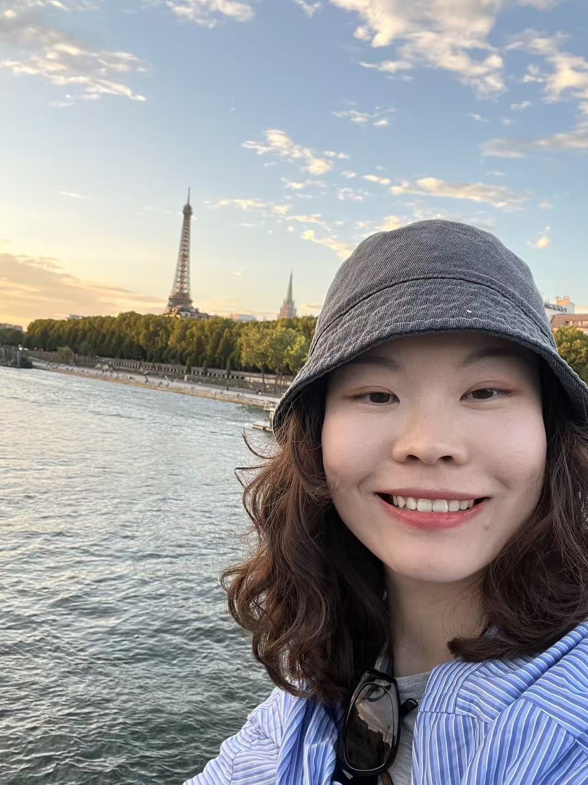

PhD candidate at the Bernoulli Institute for Artificial Intelligence
Hey all, and welcome to my webpage!
I am currently in the fourth year of my PhD in the cognitive modeling group within the Department of Artificial Intelligence at the Bernoulli Institute, University of Groningen, The Netherlands.
My research focuses on identifying cognitive and speech markers of affective disorders, especially depression. I am interested in maladaptive spontaneous thinking patterns in depressed individuals, such as mind-wandering and rumination.
I am also interested in using objective speech and language markers to better detect depression and understand its associations with underlying cognitive processes, integrating natural language processing and machine learning methods.
Recently, I have been exploring mindfulness-based interventions to reduce such cognitive vulnerabilities and depression-related speech changes.
Email: s.s.sheng@rug.nl
Address: Nijenborgh 9, 9747 AG Groningen, The Netherlands